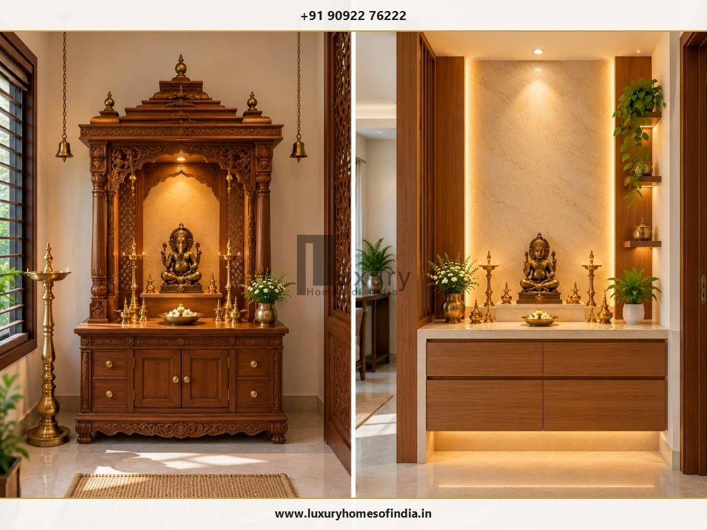
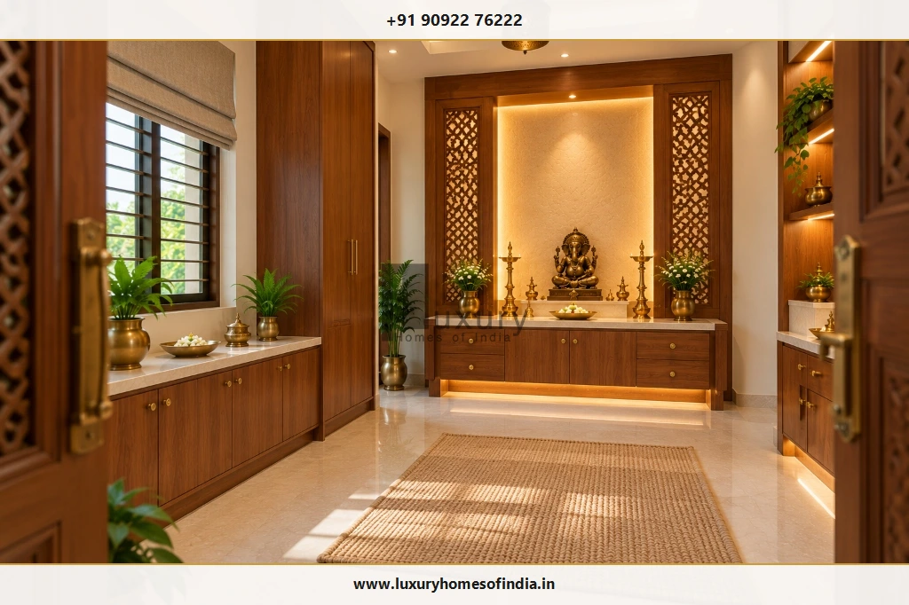
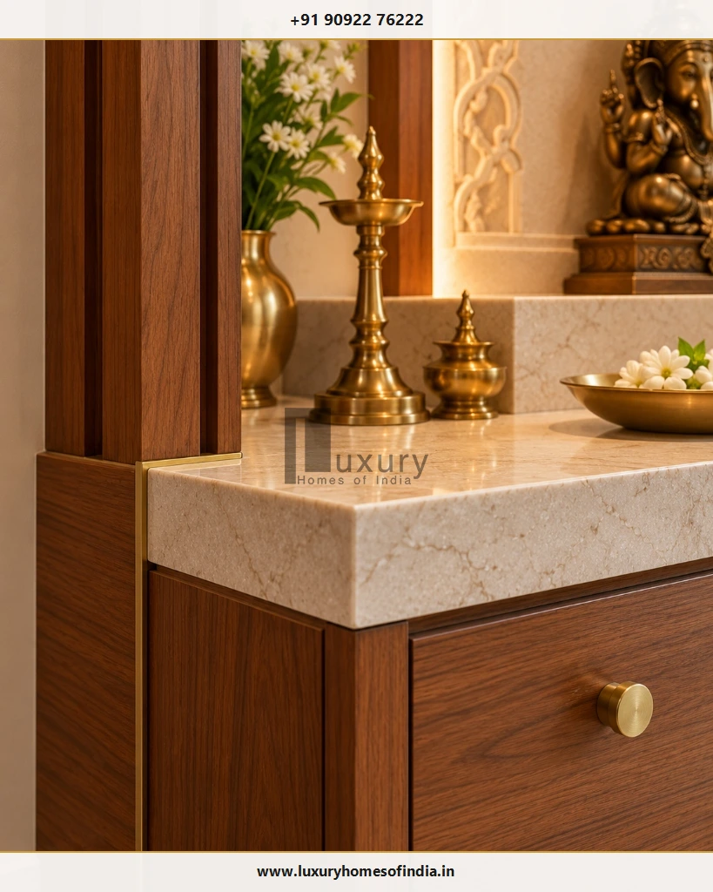
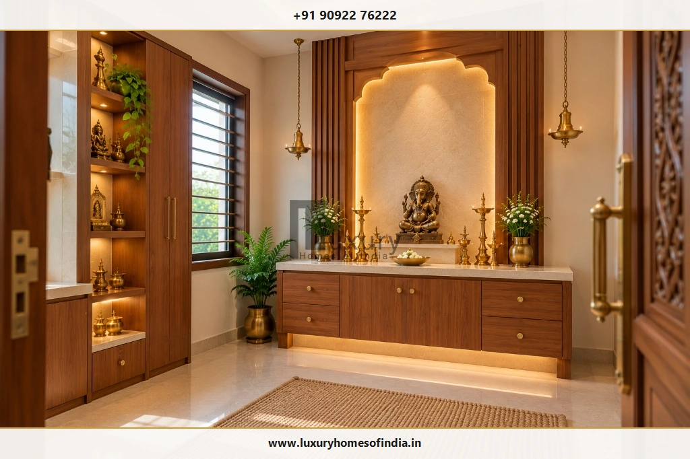

Pooja Room Design for Independent Houses in Chennai: Traditional Elegance Meets Modern Living
A well-planned pooja room in an independent house should reflect the family's sacred traditions while fitting naturally into the home's architecture. Discover how to plan spacious layouts, specify resilient materials, integrate ambient illumination, observe Vastu guidelines, and craft an enduring sanctuary for daily worship.

Executive Summary: Sacred Architecture for Chennai Homes
Unlike compact city apartments where prayer spaces are often restricted to floating wall shelves, an independent house or villa in Chennai offers the rare architectural freedom to create a fully dedicated, acoustically serene sanctuary. Balancing classical South Indian temple motifs—such as ornate teakwood gopurams, fluted pilasters, and cast brass bells—with contemporary stone surfaces, concealed LED profiles, and climate-conscious ventilation requires early spatial coordination.
- Dedicated Sanctuary: Space for multi-generational seated worship and festivals.
- Directional Vastu: Optimal Ishanya (North-East) orientation during layout planning.
- Climate Durability: Moisture-resistant timbers, sealed marbles, and brass hardware.
- Flame & Smoke Safety: Dedicated exhaust shafts and non-combustible altar counters.
Table of Contents
- 1. Choosing the Right Pooja Room Design for an Independent House
- 2. How to Plan the Pooja Room in a New House
- 3. Vastu Considerations for Independent House Pooja Rooms
- 4. Materials for Pooja Room Interiors in Chennai
- 5. Lighting and Ventilation for Daily Worship
- 6. Colour Palettes for Traditional and Modern Pooja Rooms
1. Choosing the Right Pooja Room Design for an Independent House
The best pooja room design is not necessarily the largest or most ornate. It is the one that naturally supports your family's daily devotional rituals, integrates seamlessly into the ground or first-floor plan, and remains straightforward to clean and maintain over decades of daily use.
Before committing to architectural drawings or custom millwork, establish four practical parameters:
Occupancy & Ritual Frequency
How many family members gather for morning prayers or major festive occasions such as Diwali, Navratri, and Pongal?
Postural Ergonomics
Will elders and family members prefer seated floor prayer on darbha mats, standing worship before a counter-height platform, or a hybrid layout?
Deity & Utensil Footprint
What is the exact count and dimension of brass idols, silver lamps (kuthuvilakku), framed ancestral portraits, and sacred literature?
Spatial Enclosure
Should the prayer sanctuary be fully enclosed behind carved double doors, semi-screened with CNC jaali panels, or visually integrated into a private courtyard?
Dedicated Pooja Room
A dedicated room establishes an uninterrupted contemplative atmosphere away from living room televisions and kitchen foot traffic. In a custom villa design, an independent pooja room allows architects to position the altar as the central focal point while reserving dedicated zones for seated dhyana, built-in storage cabinets, and uninhibited circumambulation (pradakshina). Ensure the floor plan allocates sufficient clearance so that open cabinet drawers do not impede devotees entering the space.
Traditional South Indian Pooja Room
A traditional Tamil Nadu prayer room celebrates centuries of artisanal temple craft. Hallmark features include hand-carved Burma or teakwood gopuram pediments, solid brass bells suspended on heavy chains, floral lotus carvings, and a raised polished stone pedestal. In an independent home, the key is architectural proportion: an overly ornate altar shoehorned into a small room feels claustrophobic, whereas a disciplined composition with authentic materials creates enduring gravitas.
Contemporary Minimalist Prayer Room
For homeowners who favor contemporary residential architecture, a modern prayer room unites clean geometric planes, warm fluted timber battens, and backlit natural stone slabs. Muted neutral tones—such as warm ivory, soft beige, and rich American walnut—provide a quiet, distraction-free backdrop that directs all visual focus toward the consecrated idols.
Custom Wooden Mandir
A standalone or built-in wooden mandir can serve as the architectural masterpiece of the prayer room. Before fabrication, homeowners must verify the timber species, kiln-drying certification, and structural support. Solid teakwood shrines can easily exceed 250 to 400 kg; if elevated or wall-fastened, the supporting masonry and chemical anchor fasteners must be structurally engineered.
Stone-Finished Altar
Solid marble, quartz, and flamed granite platforms create hygienic, non-combustible altar surfaces that withstand daily exposure to oil droplets, holy water (teertham), and kumkum powders. Selecting low-porosity, professionally sealed natural stone prevents deep staining while facilitating effortless cleaning.

| Design Format | Typical Floor Area | Ritual Capacity | Key Structural Advantage | Best Suited For |
|---|---|---|---|---|
| Dedicated Pooja Room | 40 – 120 sq ft | 4 – 8 Devotees | Full acoustic privacy, generous storage, and dedicated exhaust shafts. | Independent villas, duplex bungalows, and joint-family residences. |
| Traditional South Indian Mandir | 35 – 80 sq ft | 3 – 6 Devotees | Authentic artisanal woodwork, carved threshold, and brass hardware. | Heritage-inspired architecture and traditional Chettinad/Dravidian homes. |
| Contemporary Minimalist Altar | 25 – 60 sq ft | 2 – 4 Devotees | Concealed LED cove lighting, flush-front cabinetry, and seamless stone. | Modern minimalist villas and open-concept luxury residences. |
| Courtyard / Thinnai Alcove | 20 – 45 sq ft | 2 – 3 Devotees | Direct access to natural skylight, cross-breezes, and landscaped greens. | Tropical courtyard villas and biophilic residential floor plans. |
2. How to Plan the Pooja Room in a New House
The most successful prayer spaces in independent homes are planned during the initial architectural schematic design phase rather than retrofitted during final carpentry. Coordinating spatial positioning early prevents structural conflicts with beams, plumbing stacks, or awkward door swings.

Select the Location Before Finalising Interiors
Review the proposed sanctuary room against adjacent spaces: bedrooms, formal living areas, dining halls, kitchens, staircase flights, and guest bathrooms. Ensure that the pooja room does not share a common wall with a toilet or sit directly below plumbing fixtures on the upper floor. Pay close attention to circulation routes: entering the prayer room should feel deliberate and calm, unmarred by high-traffic household corridors.
Size the Room Around Actual Devotional Activities
Standard room dimensions often fail to account for the physical footprint of deep cabinetry, floor mats, or festival seating. When drawing plans, allocate a minimum altar depth of 24 to 30 inches, an altar elevation of 18 to 24 inches for seated worship (or 32 to 36 inches for standing prayer), and at least 36 to 48 inches of unobstructed clearance in front of the altar platform for devotees.
Coordinate Electrical and Structural Requirements
Mark electrical junction boxes, LED driver concealments, ceiling fan positions, and exhaust fan ducting on MEP drawings before slab casting and brickwork plastering. If heavy stone elements—such as a 3-inch solid granite idol pedestal or an ornate marble backdrop—are planned, verify the structural load capacity of the floor slab with your civil engineer.
Plan for Cleaning and Long-Term Servicing
Daily pooja rituals involve water, milk, oil, and ghee. Ensure altar counters have a subtle forward edge drip-mould to catch liquid spills before they seep into lower wooden drawers. Avoid deep unsealed crevices behind carved fretwork where insects or oil fumes could accumulate.
3. Vastu Considerations for Independent House Pooja Rooms
Vastu Shastra provides time-honored spatial recommendations for creating balanced, energy-conductive prayer environments. In an independent house, where you control the complete orientation and footprint, integrating directional principles is far more achievable than in multi-story apartments.
Traditional Vastu Planning Principles
Homeowners should discuss specific interpretations with their trusted family Vastu consultant. Commonly respected guidelines for independent houses include:
- Cardinal Location: The North-East (Ishanya) quadrant is traditionally considered the most auspicious energy zone. East and North orientations are also widely favored.
- Devotee Orientation: Ideals dictate that devotees face either East or North while performing daily prayers. Idols should not face South.
- Ground Floor Preference: In multi-story residences, placing the pooja room on the ground floor fosters grounded, accessible family participation, especially for elderly members.
- Doorway & Threshold: A two-shutter entrance door with an authentic raised wooden threshold (vaasapadi) is traditionally believed to contain sacred energy within the sanctum.
- Vertical Alignment: Never position a pooja room directly underneath a bathroom, washroom, septic line, or master bed on the floor above.
For in-depth directional analysis, explore our companion architectural guide on Pooja Room Placement as per Vastu.
4. Materials for Pooja Room Interiors in Chennai
Chennai's coastal microclimate—characterized by high relative humidity, elevated year-round temperatures, and saline air—demands careful material specification. Surfaces must not only convey sacred grandeur but also resist moisture expansion, oil stains, and heat.

Wood and Engineered Wood
Natural solid teakwood (CP Teak, Burma Teak, or Nilambur Teak) remains the gold standard for traditional temple framing due to its natural silica content and oil resistance. For large paneling, wall claddings, and internal carcass cabinetry, specify IS 710 marine-grade plywood treated with high-grade natural veneers to eliminate warping caused by Chennai's seasonal humidity swings.
Marble and Granite
Pure white Makrana marble holds sacred status in Indian temple architecture, staying cool and luminous. However, unsealed marble easily absorbs turmeric, oil, and ghee stains. High-density quartz or honed black granite offers superior chemical stain resistance for the primary diya-lighting platform.
Brass and Architectural Metals
Cast brass bells, recessed edge profiles, decorative filigree, and kuthuvilakku lamps impart warmth and classical authenticity. Specify lacquer-sealed brass hardware for concealed drawer pulls and decorative trims to prevent rapid oxidation and tarnishing in Chennai's saline coastal air.
Glass and Jaali Screening
CNC laser-cut wooden jaalis, fluted frosted glass, and brass mesh partitions allow soft natural light to penetrate the room while preserving contemplative privacy. Fluted glass also conceals internal worship paraphernalia from casual living-room sightlines without visually shrinking the space.
| Material | Chennai Climate Durability | Oil & Heat Tolerance | Maintenance Regimen | Optimal Application |
|---|---|---|---|---|
| Seasoned Teakwood | Excellent (High natural oils) | Moderate (Keep clear of open flames) | Annual beeswax or PU buffing | Carved mandir frames, doors, and pilasters. |
| Makrana White Marble | Outstanding | Porous (Requires penetrating sealant) | Neutral pH stone cleaner; re-seal biannually | Backdrop panels, idol pedestals, and room flooring. |
| Engineered Quartz | Impervious to humidity | High stain resistance; good heat tolerance | Mild detergent wipe-down | Primary altar surface and offering preparation counter. |
| Solid Cast Brass | Resilient (Requires protective coating) | Immune to candle & oil flame heat | Brasso polish or sealed factory lacquer | Bells, oil lamps, hardware inlays, and door handles. |
5. Lighting and Ventilation for Daily Worship
Illumination in a prayer sanctuary should evoke a sense of quiet reverence rather than sterile brightness. Balancing ambient illumination, focused altar backlighting, and adequate ventilation ensures a safe, soothing environment.
Ambient Lighting
Utilize warm white ceiling coves (2700K to 3000K) to wash walls gently without creating glare on polished stone or idol surfaces.
Altar Backlighting
Conceal high-CRI (90+) LED strip channels behind translucent onyx or carved timber arches to create a radiant spiritual halo behind idols.
Dedicated Ventilation
Install an acoustic inline exhaust fan or operable transom louvers to evacuate smoke from camphor, sambrani, and incense effortlessly.
Fire & Flame Separation Rule
Traditional oil lamps (diyas) and agarbattis generate intense localized heat. Maintain a minimum safe clearance of 18 inches (450 mm) between open diya flames and upper timber shelves, hanging fabrics, or electrical switchboards. Never place brass lamps on raw unsealed wood or near curtains.
6. Colour Palettes for Traditional and Modern Pooja Rooms
A refined prayer room avoids visual chaos. The colour palette should support the divine sanctum rather than compete for attention. In luxury Chennai residences, five curated palettes stand out:
Makrana marble floors, off-white lime-plastered walls, and subtle brushed brass inlays. Dignified, luminous, and timeless.
Deep natural honey-teak millwork balanced by warm sandstone wall panels and brass temple bells. Authentic South Indian aesthetic.
Travertine wall cladding, fluted walnut cabinetry, and antique bronze fixtures for a serene, tactile contemporary sanctuary.
Handmade terracotta tiles, exposed brick accents, and raw seasoned wood. Ideal for courtyard villas and rustic luxury homes.
Subtle beige micro-cement walls, smoked oak timber portals, and minimalist recessed lighting for contemporary urban estates.
7. Adapting the Design to Different Independent Houses
Residential typologies dictate pooja room planning in distinct ways. The architectural requirements of a multi-acre coastal villa along ECR differ substantially from an urban row bungalow in Anna Nagar or an ancestral renovation in Mylapore.
8. Storage and Functional Details
A peaceful pooja room requires thoughtful functional storage. Without dedicated places for oil cans, wicks, incense packs, and festival brass thalis, clutter inevitably spills onto the sacred altar.

Lower Altar Drawers
Equip drawers with soft-close Blum or Hettich slides and oil-resistant stainless-steel liners for wicks, matchboxes, camphor, and dhoop holders.
Devotional Book Storage
Incorporate dust-free glass-front cabinets or concealed tall cupboards to protect holy scriptures (stotras, Gita, Vedas) respectfully above floor level.
Pull-Out Prasadam & Aarti Trays
Integrate heavy-duty pull-out stone or teakwood ledges directly beneath the altar counter to hold heavy brass offering plates and aarti lamps securely.
Oil & Ghee Refill Zone
Provide a lower ventilated compartment with removable spill trays for sesame/ghee containers, keeping oily residue separate from dry prayer articles.
9. Safety and Maintenance Checklist
Ensuring the safety of family members and safeguarding the residence against fire hazards requires disciplined architectural precautions:
10. What Determines the Cost of a Pooja Room in Chennai?
The investment required for an independent house pooja room is governed by the scope of architectural work, material specifications, and handcrafted detailing rather than a single generic per-square-foot metric. In Chennai, costs generally span three distinct tiers:
₹1.5L – ₹3.5L
Designed for compact alcoves or minimalist niches in 3BHK homes.
- • Marine ply with natural wood veneer
- • Granite or composite quartz platform
- • Concealed warm LED backlighting
- • Basic soft-close lower cabinetry
₹4.0L – ₹9.5L
Standard dedicated pooja room (40 to 70 sq ft) in independent Chennai houses.
- • Teakwood framing and CNC jaali shutters
- • Makrana white marble altar & flooring
- • Full-height storage with brass hardware
- • Dimmable architectural LED lighting & exhaust
₹10L – ₹25L+
Bespoke sacred pavilion in high-end Chennai luxury villas and bungalows.
- • Hand-carved solid Burma Teak gopuram
- • Backlit Italian onyx or Statuario marble slabs
- • Custom cast brass gates and threshold inlays
- • Smart home automation & ducted ventilation
Contractor Quotation Due Diligence
Avoid accepting lump-sum quotations that lack line-item material specifications. Ensure the contractor explicitly specifies timber origin (e.g., kiln-seasoned CP Teak vs commercial hardwood), marble thickness (18mm vs 25mm), hardware brands (Blum, Hettich, Hafele), surface finish coats (polyurethane vs melamine), electrical fixtures, and installation scope.
11. Pooja Room Planning Checklist
Review this comprehensive 11-point architectural checklist with your architect, interior designer, or turnkey builder before approving fabrication:
| # | Planning Milestone | Verification Action | Sign-Off |
|---|---|---|---|
| 1 | Spatial Orientation | Confirm North-East (Ishanya), East, or North placement on the architectural floor plan. | |
| 2 | Dimensional Ergonomics | Check clear standing and seated floor area around altar with open cabinet doors. | |
| 3 | Deity & Idol Sizing | Verify altar step depths and vertical heights accommodate all family idols and portraits. | |
| 4 | Material Authenticity | Confirm genuine seasoned teakwood, marine ply, sealed marble, and brass hardware grades. | |
| 5 | Dedicated Storage | Provide soft-close drawers for wicks/camphor, puja thali shelves, and oil bottle zones. | |
| 6 | Concealed Electricals | Mark concealed conduit boxes, driver access panels, and switchboard locations away from heat. | |
| 7 | Flame & Smoke Safety | Verify 18-inch clearance between diya flame and wood, with dedicated exhaust fan ducting. | |
| 8 | Door Clearance | Ensure two-shutter entrance doors open inward smoothly without clashing with furniture. | |
| 9 | Structural Capacity | Verify floor slab and chemical anchor bolt capacity for heavy stone or solid timber elements. | |
| 10 | Maintenance Access | Ensure LED drivers, light fixtures, and high shelves are accessible without dismantling. | |
| 11 | Itemized Quotation | Inspect contractor bill of quantities for material specs, civil work, finishing, and exclusions. |
Frequently Asked Questions
Architectural Consultation for Luxury Pooja Sanctuaries
A thoughtfully planned pooja room combines sacred family traditions with the exacting demands of contemporary living. Whether you envision a hand-carved Dravidian mandir, a clean-lined stone sanctuary, or an integrated courtyard altar, early coordination ensures flawless execution without costly alterations.
Luxury Homes of India (LHI) executes bespoke architectural design, turnkey villa construction, and premium interior execution across Chennai and Tamil Nadu. Contact our design team to explore how your sacred space can be harmoniously integrated into your custom residence.